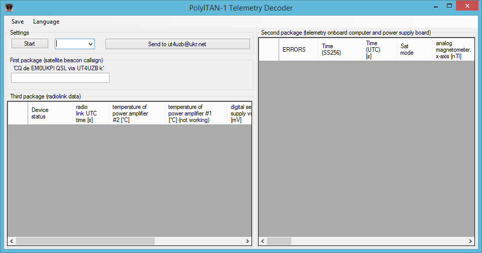

Here you can find the telemetry decoder software for the PolyITAN-1 CubeSat.
All you need is a PC with installed Windows XP or higher. Just download and follow instructions. Additional required components like .NET or Windows updates may be installed during installation process (note that it may require reboot).
The program may be launched by shortcut on desktop or in the Start menu. Program could automatically checking and installing updates before starting.